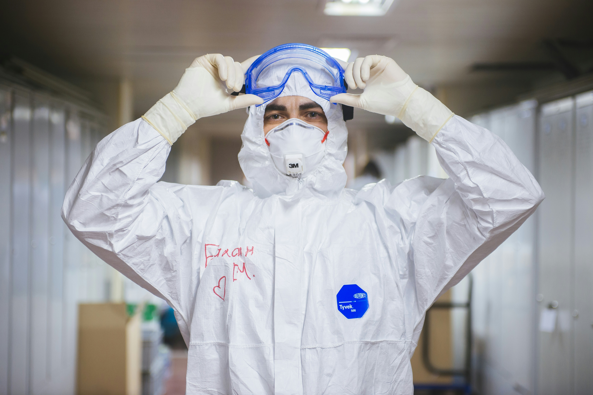
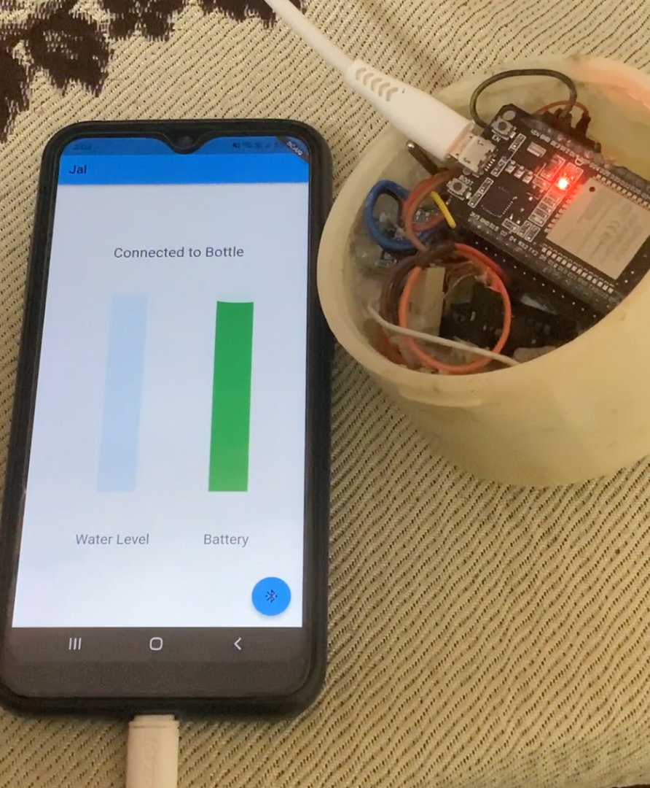
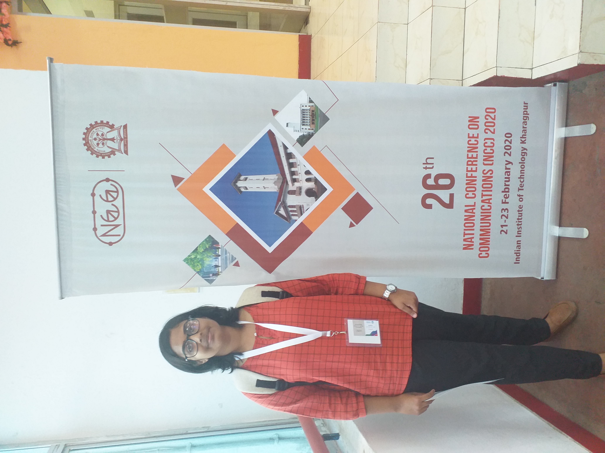
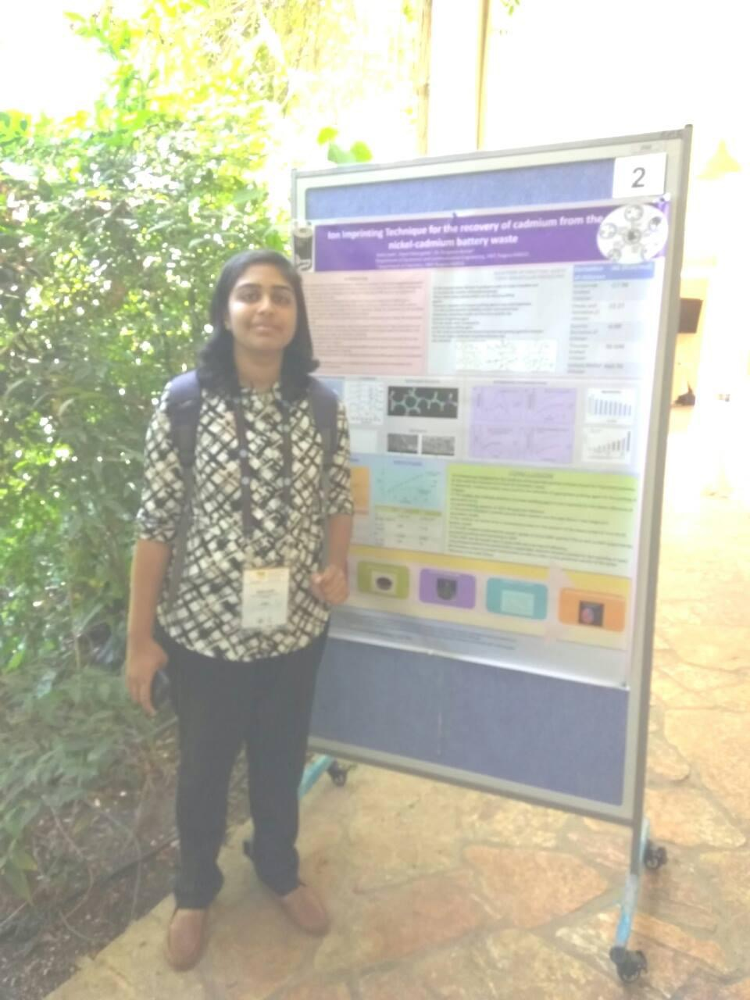
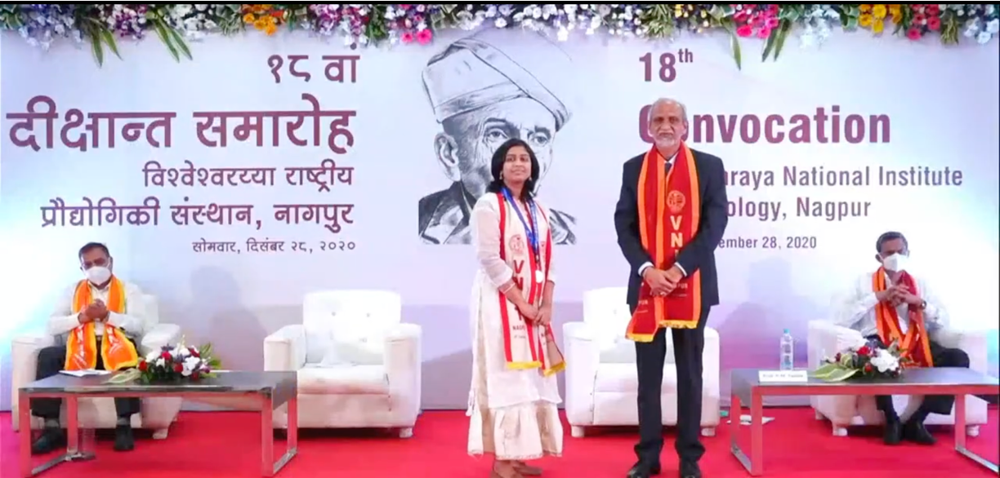
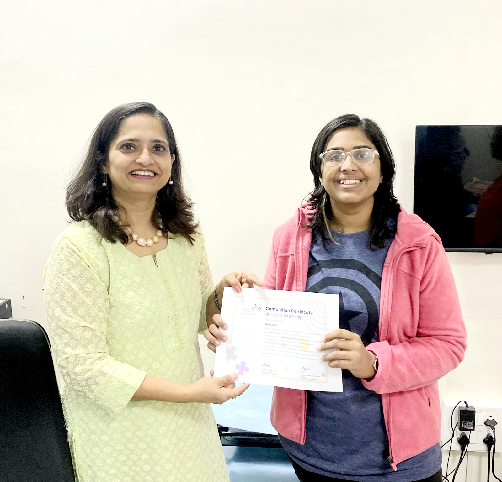
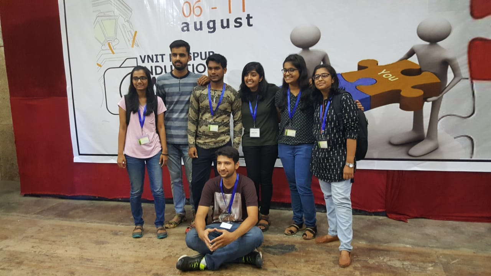

Research Assistant in STMI Lab
Texas A&M University
Guide:
Dr. Bobak Mortazavi
April 2024 - Present
- Researching and implementing self-supervised learning techniques for calorie detection from food images.
- Working on an overall project that attempts to create a multi-modal model based on meal images, CGM readings and other demographics for glucose monitoring and future peak predictions.
- Rigorously implementing algorithms like DINO, BYOL and modifying them to adapt to the current project.
Teaching Assistant for IDIS 450
Texas A&M University
January 2024 - May 2024
- Conducted lectures on topics like Data Science (Data pre-processing, analysis, Machine learning algorithms from Linear Regression to Neural Networks).
- Conducted lab sessions for over 200 students in 3 batches to make the students implement the algorithms in python.
- Guided 16 student projects as a part of final submission for the course.
Senior Machine Learning Engineer
Aspect Ratio, India
July 2020 - July 2023
- Achieved ~5x reduction in analysis duration by development of an end-to-end ML pipeline consisting of data extraction, pre-processing, model building, and recommendation generation for optimal product sales timing.
- Identified 25% new customers by conducting in-depth feature attribution analyses to understand pivotal customer characteristics that influence purchase of a product.
- Alleviated product sales backlog stemming from the COVID-19 pandemic by 60% through Time Series Analysis models. Employed clustering and regression techniques on numerous real-time data variables to derive actionable insights.
- Conducted descriptive analytics to understand the product combinations, sequences across 15 years for over 10M people.
Master in Science in Computer Engineering - Machine Learning and AI track
Texas A&M University, College Station, Texas
August 2023 - Present
Prominent Coursework:
Machine Learning, Artificial Intelligence, Data Mining, Parallel Computing,
Statistical Computing, Operating Systems, Mathematics for Signal Processing, Computer Networks
Prominent Achievements:
- Full funding for Spring 2024 and Merit scholarship for Fall 2023.
- Teaching Assistant for IDIS 450 (Data Science course) in Spring 2024.
- Grader for ECEN 350 (Computer Architecture) in Fall 2024.
Bachelor of Technology in Electronics and Communication Engineering
Visvesvaraya National Institute of Technology, India (NIT Nagpur)
July 2016 - May 2020
Prominent Achievements:
- Madhur Dahake Gold medal for highest CGPA among girls in ECE 2020.
- Academic Excellence Prize for 2nd highest CGPA in ECE 2020.
- Published more than 5 research articles in SCIE journals and high impact international conferences.
Self-supervised Learning for calorie prediction using food meal images
STMI Lab, TAMU
Tools and methods: Multi-modal Deep Learning, Vision Transformers, BYOL, DINO, Attention Transformers, LSTMs
- Using self-supervised learning to predict the number of calories in food based on meal images.
- Using DINO architecture to perform self-supervised learning.
- Further using CGM readings, patient demographics as other modalities for solving an overall bigger problem - blood glucose level prediction .

COVID-19 Pandemic-Driven Product Backlog Assessment - A Time Series Forecasting Approach
Merck US
Tools and methods: Time Series Forecasting, Machine Learning, SQL
- Numerous elective surgeries were postponed due to the onset of the COVID-19 pandemic.
- Consequently, sales of the considered project, an anesthesia reversal agent, declined.
- A significant backlog emerged in the sales of the product.
- The objective at hand was to assess the backlog generated in the sale of the product from mid-2020 to mid-2022.
- Additionally, we identified the top 20 target hospitals in the country to address this backlog.

Multi-modal deep learning : Digit classification using images + spoken audio
CSCE 633 - Machine Learning, TAMU
Tools and methods: Multi-modal Deep Learning, CNNs, RNNs
- Proposed a multi-modal learning technique for handwritten digit classification, integrating Image and Audio data modalities..
- Utilized MNIST handwritten image dataset and corresponding spoken audio samples for database construction.
- Trained a multi-modal deep learning network comprising a 4-layer Convolutional Neural Network (CNN) for image processing and a 1-layer Recurrent Neural Network (RNN) for audio analysis.
- Employed latent fusion technique to seamlessly integrate information from both modalities.
- Outperformed standalone models, showcasing the efficacy of multi-modal learning approach in digit classification tasks
Github Link

Machine Learning based Feature Attribution to identify new potential customers
Merck US
Tools and methods: SQL, Machine Learning
- Pool of more than 10M customers was created from the last 8 years from an SQL database.
- 100+ Characteristics of the customers were identified like: demographics, other products purchase, social history, medical history etc.
- Multiple models trained to understand the important features in customers that drive purchase of the product.
- From the best models- further analysis was done to identify top features for target pool identification.
- This resulted in better understanding of target customers and increased the pool by over 25%.

Human Activity Classification using on-body miniaturized Antennas
VNIT, India
Tools and methods: Machine Learning, Matlab, Antenna Design and testing
- Successfully categorized diverse human activities utilizing a specialized Antenna-based Wrist Band prototype. This wearable technology facilitated accurate activity classification among users.
- Employed Ultra-thin antenna technology and Dynamic Time Warping Algorithm to achieve precise activity classification. Analyzed real-time S11 antenna signal data for robust results.
- Classification accuracy: 98.5%; Published 3 research papers based on this project (2 in SCIE indexed journal).

Smart Water Bottle - an IoT product that keeps you hydrated!
VNIT, India (Applied for patent)
Tools and methods: IoT, Data Collection, Machine Learning
- Designed and developed cutting-edge BLE based bottle prototype with integrated functionality to monitor user water
consumption. Performed battery optimization resulting in an extended rechargeable device battery life of up to 10 hours.
- Facilitated real-time data exchange between bottle and mobile by development of a cross-platform mobile application.
- Collected time series data for water intake for over 100 subjects and built a Machine Learning Model to segment subjects based on their water intake.
- Based on the clusters - custom hydration alerts were sent to users falling in each cluster.

Skills
Programming Languages:
Python, C++, C, JavaScript
Databases:
SQL, MongoDB
Machine Learning/AI:
Deep Learning, Natural Language Processing, Retrieval Augmented Generators, Large Language Models, LangChain, Hugging Face Transformers
Big Data:
Hadoop, Spark, Kafka etc
Data Science:
Statistics, Machine Learning, Optimization, Predictive Analytics, Time Series Forecasting, Signal Processing, Data Mining, ETL, Dashboarding, Image Processing
Libraries:
Pytorch, Statsmodels, Pandas, NumPy, Scikit-learn, Matplotlib, Plotly, TensorFlow, Seaborn
Soft Skills:
Leadership, Public Speaking, Time Management, Critical Thinking, Problem Solving, Empathy
Awarded Merit scholarship for Fall 2023 and 100% funding for Spring 2024
Texas A&M University
2023-2024
- Awarded a scholarship of $10,000 by Texas A&M University in 2023 based on strong academic and research profile.
- Received a full Funding of approximately $23,000 in Spring 2024 for being a Teaching Assistant for IDIS 450 course.
Selected Indian delegate for International Youth Exchange Program 2020
Visvesvaraya National Institute of Technology
2020
- I was selected as a national delegate in the prestigious International Youth Exchange Program organized by the Government of India.
- This was a 30 member trip to Sri Lanka for culture and knowledge exchange.
Published 2 research papers in SCIE indexed journal
Visvesvaraya National Institute of Technology
2021
Represented VNIT in the 26th National Conference on Communications
Presented my work on Machine Learning Techniques for Human Activity Classification in the 26th NCC at IIT Kharagpur.

Represented VNIT in the 10th conference on Molecular Imprinting 2018
Presented my work on memory based polymers in the 10th MIP at Hebrew University, Israel.

Received the Madhur Dahake Gold Medal and Academic Excellence Prize
Received the awards for excellent academic performance in BTech Electronics and Communication Engineering at NIT Nagpur.

Member and Database Manager
Niche Advocacy Foundation
2022 - 2024
- Covid-19 led to a rise in problems related to emotional and mental fitness. There was a rise in cases of OCD, Depression and other mental issues.
- I joined NAF as a member and worked for advocating emtional fitness - working with one of the prominent Neurologist in India - Dr. Poornima Gauri.

Student Mentor
Visvesvaraya National Institute of Technology
2018 - 2020
- Got selected as a student mentor for 20 junior students in the University.
- I was responsible for academic and extra-cirricular growth of the students in the campus.
- Conducted weekly group and personal meetings for my mentees to understand their problems and help them reach a solution.
